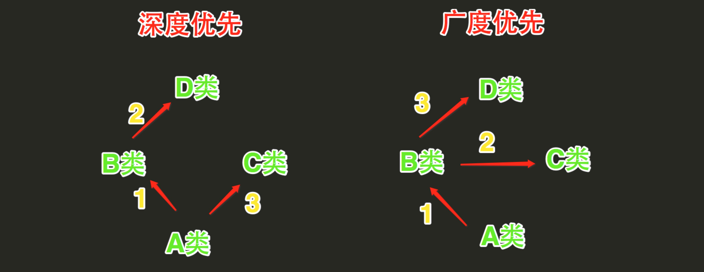
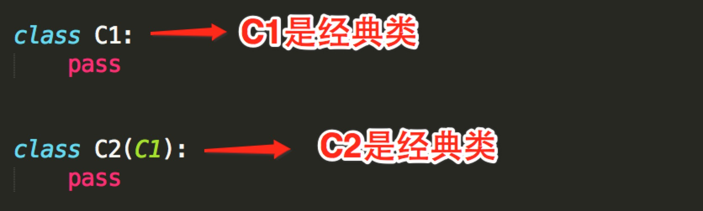
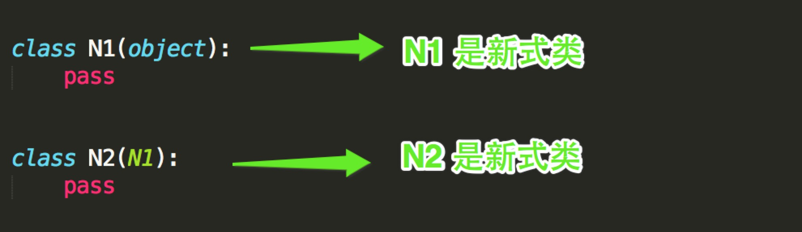

原文连接:https://www.cnblogs.com/lsf123456/p/11197800.html
一、继承
1. 概念
继承是一种创建新类的方式，新建的类可以继承一个或多个父类（python支持多继承），父类又可称为基类或超类，新建的类称为派生类或子类。
子类会“”遗传”父类的属性，从而解决代码重用问题。
class ParentClass1: #定义父类
pass
class ParentClass2: #定义父类
pass
class SubClass1(ParentClass1): #单继承，基类是ParentClass1，派生类是SubClass
pass
class SubClass2(ParentClass1,ParentClass2): #python支持多继承，用逗号分隔开多个继承的类
pass
查看继承
>>> SubClass1.__bases__ #__base__只查看从左到右继承的第一个子类，__bases__则是查看所有继承的父类
(<class '__main__.ParentClass1'>,)
>>> SubClass2.__bases__
(<class '__main__.ParentClass1'>, <class '__main__.ParentClass2'>)
issubclass(sub, super)检查sub类是否是 super 类的子类
class Foo(object):
pass
class Bar(Foo):
pass
issubclass(Bar, Foo)在开发程序的过程中，如果我们定义了一个类A，然后又想新建立另外一个类B，但是类B的大部分内容与类A的相同时
我们不可能从头开始写一个类B，这就用到了类的继承的概念。
通过继承的方式新建类B，让B继承A，B会‘遗传’A的所有属性(数据属性和函数属性)，实现代码重用
==========================第一部分
例如
猫可以：喵喵叫、吃、喝、拉、撒
狗可以：汪汪叫、吃、喝、拉、撒
如果我们要分别为猫和狗创建一个类，那么就需要为 猫 和 狗 实现他们所有的功能，伪代码如下：
#猫和狗有大量相同的内容
class 猫：
def 喵喵叫(self):
print '喵喵叫'
def 吃(self):
# do something
def 喝(self):
# do something
def 拉(self):
# do something
def 撒(self):
# do something
class 狗：
def 汪汪叫(self):
print '喵喵叫'
def 吃(self):
# do something
def 喝(self):
# do something
def 拉(self):
# do something
def 撒(self):
# do something
==========================第二部分
上述代码不难看出，吃、喝、拉、撒是猫和狗都具有的功能，而我们却分别的猫和狗的类中编写了两次。如果使用 继承 的思想，如下实现：
动物：吃、喝、拉、撒
猫：喵喵叫（猫继承动物的功能）
狗：汪汪叫（狗继承动物的功能）
伪代码如下：
class 动物:
def 吃(self):
# do something
def 喝(self):
# do something
def 拉(self):
# do something
def 撒(self):
# do something
# 在类后面括号中写入另外一个类名，表示当前类继承另外一个类
class 猫(动物)：
def 喵喵叫(self):
print '喵喵叫'
# 在类后面括号中写入另外一个类名，表示当前类继承另外一个类
class 狗(动物)：
def 汪汪叫(self):
print '喵喵叫'
==========================第三部分
#继承的代码实现
class Animal:
def eat(self):
print("%s 吃 " %self.name)
def drink(self):
print ("%s 喝 " %self.name)
def shit(self):
print ("%s 拉 " %self.name)
def pee(self):
print ("%s 撒 " %self.name)
class Cat(Animal):
def __init__(self, name):
self.name = name
self.breed = '猫'
def cry(self):
print('喵喵叫')
class Dog(Animal):
def __init__(self, name):
self.name = name
self.breed='狗'
def cry(self):
print('汪汪叫')
# ######### 执行 #########
c1 = Cat('小白家的小黑猫')
c1.eat()
c2 = Cat('小黑的小白猫')
c2.drink()
d1 = Dog('胖子家的小瘦狗')
d1.eat()
使用继承来重用代码比较好的例子
2. 多继承
- Python的类可以继承多个类，Java和C#中则只能继承一个类
- Python的类如果继承了多个类，那么其寻找方法的方式有两种，分别是：深度优先和广度优先

- 当类是经典类时，多继承情况下，会按照深度优先方式查找
- 当类是新式类时，多继承情况下，会按照广度优先方式查找
经典类和新式类，从字面上可以看出一个老一个新，新的必然包含了跟多的功能，也是之后推荐的写法，从写法上区分的话，如果 当前类或者父类继承了object类，那么该类便是新式类，否则便是经典类。
 
1.只有在python2中才分新式类和经典类，python3中统一都是新式类
2.在python2中，没有显式的继承object类的类，以及该类的子类，都是经典类
3.在python2中，显式地声明继承object的类，以及该类的子类，都是新式类
4.在python3中，无论是否继承object，都默认继承object，即python3中所有类均为新式类


1 class D:
2 def bar(self):
3 print 'D.bar'
4
5 class C(D):
6 def bar(self):
7 print 'C.bar'
8
9 class B(D):
10 def bar(self):
11 print 'B.bar'
12
13 class A(B, C):
14 def bar(self):
15 print 'A.bar'
16
17 a = A()
18 # 执行bar方法时
19 # 首先去A类中查找，如果A类中没有，则继续去B类中找，如果B类中么有，则继续去D类中找，如果D类中么有，则继续去C类中找，如果还是未找到，则报错
20 # 所以，查找顺序：A --> B --> D --> C
21 # 在上述查找bar方法的过程中，一旦找到，则寻找过程立即中断，便不会再继续找了
22 a.bar() 1 class D(object):
2 def bar(self):
3 print 'D.bar'
4
5 class C(D):
6 def bar(self):
7 print 'C.bar'
8
9 class B(D):
10 def bar(self):
11 print 'B.bar'
12
13 class A(B, C):
14 def bar(self):
15 print 'A.bar'
16
17 a = A()
18 # 执行bar方法时
19 # 首先去A类中查找，如果A类中没有，则继续去B类中找，如果B类中么有，则继续去C类中找，如果C类中么有，则继续去D类中找，如果还是未找到，则报错
20 # 所以，查找顺序：A --> B --> C --> D
21 # 在上述查找bar方法的过程中，一旦找到，则寻找过程立即中断，便不会再继续找了
22 a.bar()3. 继承原理
python到底是如何实现继承的，对于你定义的每一个类，python会计算出一个方法解析顺序(MRO)列表，这个MRO列表就是一个简单的所有基类的线性顺序列表，例如
>>> F.mro() #等同于F.__mro__
[<class '__main__.F'>, <class '__main__.D'>, <class '__main__.B'>, <class '__main__.E'>, <class '__main__.C'>, <class '__main__.A'>, <class 'object'>]为了实现继承,python会在MRO列表上从左到右开始查找基类,直到找到第一个匹配这个属性的类为止。
而这个MRO列表的构造是通过一个C3线性化算法来实现的。我们不去深究这个算法的数学原理,它实际上就是合并所有父类的MRO列表并遵循如下三条准则:
1.子类会先于父类被检查
2.多个父类会根据它们在列表中的顺序被检查
3.如果对下一个类存在两个合法的选择,选择第一个父类
4. 在子类中调用父类的方法
- 指明道姓
class Dad(object):
money = 100000000
def __init__(self, name, age):
self.name = name
self.age = age
def hit_son(self):
print('%s 正在打儿子' % self.name)
class Son(Dad):
def __init__(self, name, age):
Dad.__init__(self, name, age)
- super
class Dad(object):
money = 100000000
def __init__(self, name, age):
self.name = name
self.age = age
def hit_son(self):
print('%s 正在打儿子' % self.name)
class Son(Dad):
def __init__(self, name, age):
super().__init__(name, age)
5. 利用继承二次加工基础属性（包装）
包装：python为大家提供了标准数据类型，以及丰富的内置方法，其实在很多场景下我们都需要基于标准数据类型来定制我们自己的数据类型，新增/改写方法，这就用到了我们刚学的继承/派生知识（其他的标准类型均可以通过下面的方式进行二次加工）
class List(list): # 继承list所有的属性，也可以派生出自己新的，比如append
def append(self, project):
if type(project) is str:
super().append(project)
else:
raise TypeError('must be str')
l = List('hello')
l.append(123) # 报错
l.append('123')
6. 接口与归一化设计
1 =================第一部分：Java 语言中的接口很好的展现了接口的含义: IAnimal.java
2 /*
3 * Java的Interface接口的特征:
4 * 1)是一组功能的集合,而不是一个功能
5 * 2)接口的功能用于交互,所有的功能都是public,即别的对象可操作
6 * 3)接口只定义函数,但不涉及函数实现
7 * 4)这些功能是相关的,都是动物相关的功能,但光合作用就不适宜放到IAnimal里面了 */
8
9 package com.oo.demo;
10 public interface IAnimal {
11 public void eat();
12 public void run();
13 public void sleep();
14 public void speak();
15 }
16
17 =================第二部分：Pig.java：猪”的类设计,实现了IAnnimal接口
18 package com.oo.demo;
19 public class Pig implements IAnimal{ //如下每个函数都需要详细实现
20 public void eat(){
21 System.out.println("Pig like to eat grass");
22 }
23
24 public void run(){
25 System.out.println("Pig run: front legs, back legs");
26 }
27
28 public void sleep(){
29 System.out.println("Pig sleep 16 hours every day");
30 }
31
32 public void speak(){
33 System.out.println("Pig can not speak"); }
34 }
35
36 =================第三部分：Person2.java
37 /*
38 *实现了IAnimal的“人”,有几点说明一下:
39 * 1)同样都实现了IAnimal的接口,但“人”和“猪”的实现不一样,为了避免太多代码导致影响阅读,这里的代码简化成一行,但输出的内容不一样,实际项目中同一接口的同一功能点,不同的类实现完全不一样
40 * 2)这里同样是“人”这个类,但和前面介绍类时给的类“Person”完全不一样,这是因为同样的逻辑概念,在不同的应用场景下,具备的属性和功能是完全不一样的 */
41
42 package com.oo.demo;
43 public class Person2 implements IAnimal {
44 public void eat(){
45 System.out.println("Person like to eat meat");
46 }
47
48 public void run(){
49 System.out.println("Person run: left leg, right leg");
50 }
51
52 public void sleep(){
53 System.out.println("Person sleep 8 hours every dat");
54 }
55
56 public void speak(){
57 System.out.println("Hellow world, I am a person");
58 }
59 }
60
61 =================第四部分：Tester03.java
62 package com.oo.demo;
63
64 public class Tester03 {
65 public static void main(String[] args) {
66 System.out.println("===This is a person===");
67 IAnimal person = new Person2();
68 person.eat();
69 person.run();
70 person.sleep();
71 person.speak();
72
73 System.out.println("\n===This is a pig===");
74 IAnimal pig = new Pig();
75 pig.eat();
76 pig.run();
77 pig.sleep();
78 pig.speak();
79 }
80 }接口提取了一群类共同的函数，可以把接口当做一个函数的集合。
然后让子类去实现接口中的函数。
这么做的意义在于归一化，什么叫归一化，就是只要是基于同一个接口实现的类，那么所有的这些类产生的对象在使用时，从用法上来说都一样。
归一化的好处在于：
1. 归一化让使用者无需关心对象的类是什么，只需要的知道这些对象都具备某些功能就可以了，这极大地降低了使用者的使用难度。
2. 归一化使得高层的外部使用者可以不加区分的处理所有接口兼容的对象集合
2.1：就好象linux的泛文件概念一样，所有东西都可以当文件处理，不必关心它是内存、磁盘、网络还是屏幕（当然，对底层设计者，当然也可以区分出“字符设备”和“块设备”，然后做出针对性的设计：细致到什么程度，视需求而定）。
2.2：再比如：我们有一个汽车接口，里面定义了汽车所有的功能，然后由本田汽车的类，奥迪汽车的类，大众汽车的类，他们都实现了汽车接口，这样就好办了，大家只需要学会了怎么开汽车，那么无论是本田，还是奥迪，还是大众我们都会开了，开的时候根本无需关心我开的是哪一类车，操作手法（函数调用）都一样
在python中根本就没有一个叫做interface的关键字，如果非要去模仿接口的概念可以借助第三方模块：
http://pypi.python.org/pypi/zope.interface
twisted的twisted\internet\interface.py里使用zope.interface
文档https://zopeinterface.readthedocs.io/en/latest/
设计模式：https://github.com/faif/python-patterns
也可以使用继承：
继承的两种用途
一：继承基类的方法，并且做出自己的改变或者扩展（代码重用）：实践中，继承的这种用途意义并不很大，甚至常常是有害的。因为它使得子类与基类出现强耦合。
二：声明某个子类兼容于某基类，定义一个接口类（模仿java的Interface），接口类中定义了一些接口名（就是函数名）且并未实现接口的功能，子类继承接口类，并且实现接口中的功能
1 class Interface:#定义接口Interface类来模仿接口的概念，python中压根就没有interface关键字来定义一个接口。
2 def read(self): #定接口函数read
3 pass
4
5 def write(self): #定义接口函数write
6 pass
7
8
9 class Txt(Interface): #文本，具体实现read和write
10 def read(self):
11 print('文本数据的读取方法')
12
13 def write(self):
14 print('文本数据的读取方法')
15
16 class Sata(Interface): #磁盘，具体实现read和write
17 def read(self):
18 print('硬盘数据的读取方法')
19
20 def write(self):
21 print('硬盘数据的读取方法')
22
23 class Process(Interface):
24 def read(self):
25 print('进程数据的读取方法')
26
27 def write(self):
28 print('进程数据的读取方法')上面的代码只是看起来像接口，其实并没有起到接口的作用，子类完全可以不用去实现接口 ，这就用到了抽象类
1 什么是抽象类
与java一样，python也有抽象类的概念但是同样需要借助模块实现，抽象类是一个特殊的类，它的特殊之处在于只能被继承，不能被实例化
2 为什么要有抽象类
如果说类是从一堆对象中抽取相同的内容而来的，那么抽象类就是从一堆类中抽取相同的内容而来的，内容包括数据属性和函数属性。
比如我们有香蕉的类，有苹果的类，有桃子的类，从这些类抽取相同的内容就是水果这个抽象的类，你吃水果时，要么是吃一个具体的香蕉，要么是吃一个具体的桃子。。。。。。你永远无法吃到一个叫做水果的东西。
从设计角度去看，如果类是从现实对象抽象而来的，那么抽象类就是基于类抽象而来的。
从实现角度来看，抽象类与普通类的不同之处在于：抽象类中只能有抽象方法（没有实现功能），该类不能被实例化，只能被继承，且子类必须实现抽象方法。这一点与接口有点类似，但其实是不同的，即将揭晓答案
#一切皆文件
import abc #利用abc模块实现抽象类
class All_file(metaclass=abc.ABCMeta):
all_type='file'
@abc.abstractmethod #定义抽象方法，无需实现功能
def read(self):
'子类必须定义读功能'
pass
@abc.abstractmethod #定义抽象方法，无需实现功能
def write(self):
'子类必须定义写功能'
pass
# class Txt(All_file):
# pass
#
# t1=Txt() #报错,子类没有定义抽象方法
class Txt(All_file): #子类继承抽象类，但是必须定义read和write方法
def read(self):
print('文本数据的读取方法')
def write(self):
print('文本数据的读取方法')
class Sata(All_file): #子类继承抽象类，但是必须定义read和write方法
def read(self):
print('硬盘数据的读取方法')
def write(self):
print('硬盘数据的读取方法')
class Process(All_file): #子类继承抽象类，但是必须定义read和write方法
def read(self):
print('进程数据的读取方法')
def write(self):
print('进程数据的读取方法')
wenbenwenjian=Txt()
yingpanwenjian=Sata()
jinchengwenjian=Process()
#这样大家都是被归一化了,也就是一切皆文件的思想
wenbenwenjian.read()
yingpanwenjian.write()
jinchengwenjian.read()
print(wenbenwenjian.all_type)
print(yingpanwenjian.all_type)
print(jinchengwenjian.all_type)
二、多态
多态指的是一类事物有多种形态
动物有多种形态：人，狗，猪
import abc
class Animal(metaclass=abc.ABCMeta): #同一类事物:动物
@abc.abstractmethod
def talk(self):
pass
class People(Animal): #动物的形态之一:人
def talk(self):
print('say hello')
class Dog(Animal): #动物的形态之二:狗
def talk(self):
print('say wangwang')
class Pig(Animal): #动物的形态之三:猪
def talk(self):
print('say aoao')
三、封装
1. 隐藏
在python中用双下划线开头的方式将属性隐藏起来（设置成私有的）
#其实这仅仅这是一种变形操作且仅仅只在类定义阶段发生变形
#类中所有双下划线开头的名称如__x都会在类定义时自动变形成：_类名__x的形式：
class A:
__N=0 #类的数据属性就应该是共享的,但是语法上是可以把类的数据属性设置成私有的如__N,会变形为_A__N
def __init__(self):
self.__X=10 #变形为self._A__X
def __foo(self): #变形为_A__foo
print('from A')
def bar(self):
self.__foo() #只有在类内部才可以通过__foo的形式访问到.
#A._A__N是可以访问到的，
#这种，在外部是无法通过__x这个名字访问到。
2. 封装
封装的真谛在于明确地区分内外，封装的属性可以直接在内部使用，而不能被外部直接使用，然而定义属性的目的终归是要用，外部要想用类隐藏的属性，需要我们为其开辟接口，让外部能够间接地用到我们隐藏起来的属性，那这么做的意义何在？？？
1：封装数据：将数据隐藏起来这不是目的。隐藏起来然后对外提供操作该数据的接口，然后我们可以在接口附加上对该数据操作的限制，以此完成对数据属性操作的严格控制。
class Teacher:
def __init__(self,name,age):
# self.__name=name
# self.__age=age
self.set_info(name,age)
def tell_info(self):
print('姓名:%s,年龄:%s' %(self.__name,self.__age))
def set_info(self,name,age):
if not isinstance(name,str):
raise TypeError('姓名必须是字符串类型')
if not isinstance(age,int):
raise TypeError('年龄必须是整型')
self.__name=name
self.__age=age
t=Teacher('egon',18)
t.tell_info()
t.set_info('egon',19)
t.tell_info()
2：封装方法：目的是隔离复杂度
#取款是功能,而这个功能有很多功能组成:插卡、密码认证、输入金额、打印账单、取钱
#对使用者来说,只需要知道取款这个功能即可,其余功能我们都可以隐藏起来,很明显这么做
#隔离了复杂度,同时也提升了安全性
class ATM:
def __card(self):
print('插卡')
def __auth(self):
print('用户认证')
def __input(self):
print('输入取款金额')
def __print_bill(self):
print('打印账单')
def __take_money(self):
print('取款')
def withdraw(self):
self.__card()
self.__auth()
self.__input()
self.__print_bill()
self.__take_money()
a=ATM()
a.withdraw()
隔离复杂度的例子
3. 特性（propety）
property是一种特殊的属性，访问它时会执行一段功能（函数）然后返回值
import math
class Circle:
def __init__(self,radius): #圆的半径radius
self.radius=radius
@property
def area(self):
return math.pi * self.radius**2 #计算面积
@property
def perimeter(self):
return 2*math.pi*self.radius #计算周长
c=Circle(10)
print(c.radius)
print(c.area) #可以向访问数据属性一样去访问area,会触发一个函数的执行,动态计算出一个值
print(c.perimeter) #同上
'''
输出结果:
314.1592653589793
62.83185307179586
'''
#注意：此时的特性arear和perimeter不能被赋值
c.area=3 #为特性area赋值
'''
抛出异常:
AttributeError: can't set attribute
'''
class Foo:
def __init__(self,val):
self.__NAME=val #将所有的数据属性都隐藏起来
@property
def name(self):
return self.__NAME #obj.name访问的是self.__NAME(这也是真实值的存放位置)
@name.setter
def name(self,value):
if not isinstance(value,str): #在设定值之前进行类型检查
raise TypeError('%s must be str' %value)
self.__NAME=value #通过类型检查后,将值value存放到真实的位置self.__NAME
@name.deleter
def name(self):
raise TypeError('Can not delete')
f=Foo('egon')
print(f.name)
# f.name=10 #抛出异常'TypeError: 10 must be str'
del f.name #抛出异常'TypeError: Can not delete'